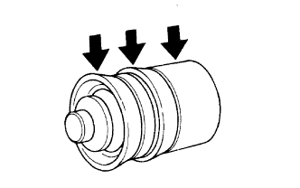

XI LANH CẮT LI HỢP > LẮP LẠI |
| 1. LẮP NÚT XẢ KHÍ XI LANH CẮT |
| 2. LẮP BỘ XI LANH CẮT LI HỢP |
Lắp nắp nút xả khí vào nút xả.
Lắp lò xo mới vào nút xả khí.
|  |
Bôi mỡ Glycol gốc xà phòng Lithium lên các vùng được chỉ ra bởi các mũi tên như trong hình vẽ.
Lắp píttông mới vào thân xi lanh.
Lắp cần đẩy vào cao su chắn bụi.
Lắp cao su (cùng với cần đẩy) vào thân xi lanh.